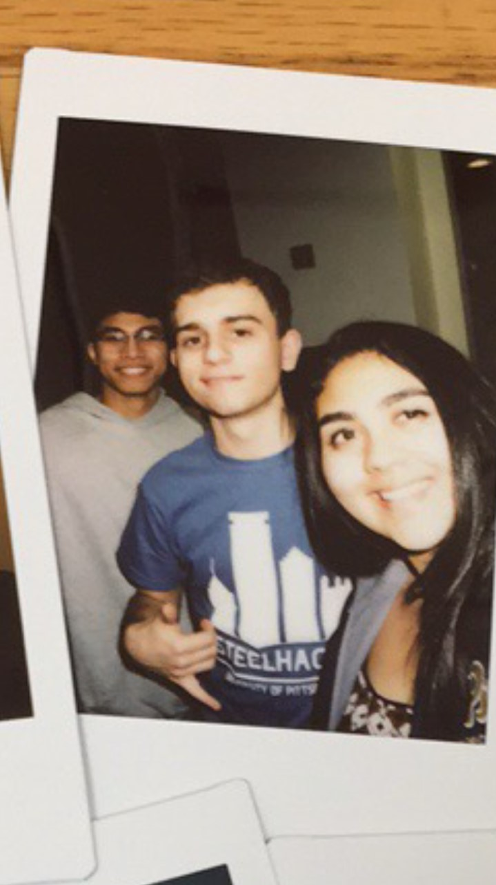

Hello I'm Dominick Gurnari
I am from Scranton, Pennsylvania(you know where the Office took place). I am currently a student at the University of Pittsburgh that is trying to study civil engineering(I need to pass physics first though). I am currently in the arts and sciences school here and I am planning on minoring in spanish.
Aside from my school life, I enjoy booling with my buds(Yes I said booling if you know what that means). I also like to play soccer and run. I actually ran a half marathon over Thanksgiving break. It sucked but I still did it!
I currently live in Sutherland East, one of the residents halls here on campus. It's pretty cool, I get a private bathroom and everything. However, it could be a little crazy at times. There is never a dull moment. It is great becasue I am a very energetic person and I love adventures.
I also have a few hobbies. I love to play pool(as in billiards) and I also enjoy mini golf. I think one day I will be the mini golf champion because I am that good. I also like to joke around and mess with people. Every night at 11pm my friends and I blast the song "Hey there Delilah" by the Plain White T's and see how many people come and try to shut it off. It is hilarious.
This new paragraph, which was not part of my last webpage, is being written because I need like 300 words for this web page bio. That describes me a lot actually. I am very nervous that I did everything wrong, however it is ok. I plan to eventually give up my concerns, but concidering that I need an A in this class in order to get into the engineering school. I really hope that this gets me to 300 words. My roomates kind of helped me with this page. Well, actually they just sat and talked about how bad of an engineer I am. They actually didn't help at all but I need to pass physics this semester. I have never passed a physics test at the University of Pittsburgh.
Dominick Gurnari
3725 Sutherland Drive
Pittsburgh, PA, 15213
dag157@pitt.edu Email Me!
